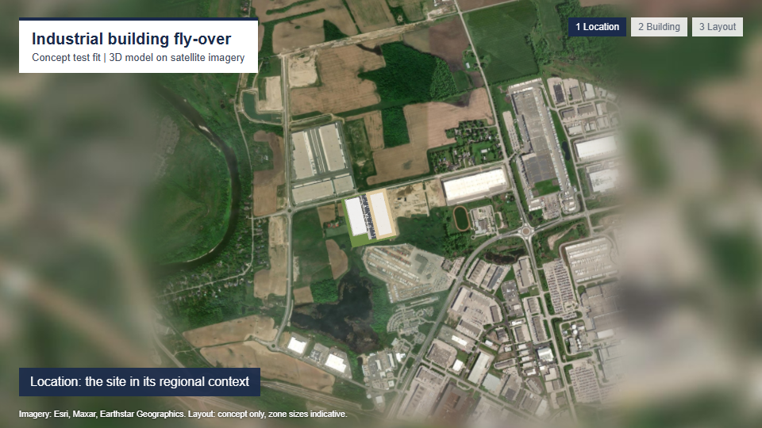
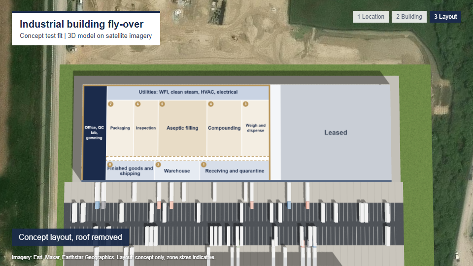

The problem
A site selection deck compared several industrial buildings for an occupier with a specialised production process. Plans and brochures did not show how the process would sit inside each building, or how the building related to its truck court and neighbours.
How it works
- Building dimensions
- Satellite imagery ground
- Procedural 3D model
- Scripted camera path
- Roof-off layout reveal
- To-scale model from a few numbers. Length, depth, clear height, dock side and door count generate the building, including dock doors, glazing, trailers and the truck court.
- Three imagery layers, one ground. Wide, mid and close satellite images are stacked and feathered at the edges so the camera can move from regional context down to the roof without a visible seam.
- Textures drawn in code. Facades, roofs and paving are painted on canvases at run time, so the file carries no texture assets beyond the ground imagery.
- A scripted story. The camera path has three chapters: location, building, layout. Viewers can pause or jump between chapters.
- Deterministic frames. A capture mode renders any moment of the timeline on demand, which was used to export the sequence as an animation.



The address, owner, tenant and building statistics have been removed, and the wide-area imagery has been blurred. Satellite imagery: Esri, Maxar, Earthstar Geographics.